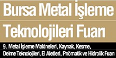
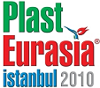
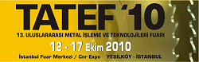
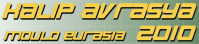
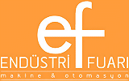

02 - 05 Aralýk 2010 > Bursa Metal Ýþleme Teknolojileri Fuarý
9. Metal Ýþleme Makineleri, Kaynak, Kesme, Delme Teknolojileri, El Aletleri, Pnömatik ve Hidrolik Fuarý
Yer: Tüyap Bursa Uluslararasý Fuar ve Kongre Merkezi
Bu Fuar, TÝAD Takým Tezgâhlarý Sanayici ve Ýþ Adamlarý Derneði iþbirliði, Bursa Büyükþehir Belediyesi ve Bursa Ticaret ve Sanayi Odasý desteði ile hazýrlanmýþtýr Bursa Sac Ýþleme Teknolojileri Fuarý ile eþ zamanlý olarak düzenlenecek olan bu Fuar, Döküm Teknolojileri özel bölümüyle birlikte ziyaretçilerle buluþacaktýr.
Fuar kapsamý:
- Talaþlý imalat makineleri ( NC, CNC, Takým Tezgâhlarý ),
- Presler,
- Kesici ve Tutucu Takýmlar,
- Endüstriyel Fýrýnlar,
- Teknik Hýrdavat ve El Aletleri,
- Aþýndýrýcýlar ve Zýmparalar,
- Endüstriyel Güvenlik Sistemleri,
- Redüktörler,
- Malzeme Kaldýrma ve Taþýma Ekipmanlarý,
- Elektroerezyon Tezgâhlarý,
- Toz ve Elektrostatik Boya makineleri,
- Elektrik Motorlarý,
|
- Endüstriyel Hava Temizleme Sistemleri,
- Hidrolik Pnömatik Sistemleri,
- Kalýplar ve Ýþleme Sistemleri,
- Kaynak Makineleri ve Yedek Parçalarý,
- Kesme Ekipmanlarý ve Yedek Parçalarý,
- Kesme Yaðlarý ve Sývýlarý,
- Endüstriyel Otomasyon Sistemleri,
- Kompresörler,
- Kimyasallarý,
- CAD/CAM Sistemleri ve Yazýlýmlarý,
- Diðer Makine Alet ve Donanýmlarý ve ilgili yayýnlar
|
Daha
fazla bilgi için: www.bursametalisleme.com
02 - 05 Aralýk 2010 > Plast Eurasia Ýstanbul 2010, 20. Uluslarararasý Ýstanbul Plastik Endüstrisi Fuarý:
(PAGEV Türk Plastik Sanayicileri, Araþtýrma, Geliþtirme ve Eðitim Vakfý iþbirliðiyle hazýrlanmaktadýr)
Yer: Tüyap Fuar ve Kongre Merkezi, Beylikdüzü
Bu sene 20. yýlýný kutlayacak olan Fuar, Ýstanbul’da plastik sektörünü bir araya toplayacaktýr. Fuar'ýn 19 yýl önce ilk kez düzenlendiðinde sadece 500 metrekare bir alaný kapsadýðýný hatýrlayarak, Plast Eurasia’nýn 2009 yýlýnda 20.000 metrekare net satýþ alanýna ulaþmasý hem fuarcýlýðýn hem de plastik sektörünün gücünü göstermektedir.
Ürün guplarý |
Plastik makineleri
- Plastik enjeksiyon makineleri
- Plastik þiþirme makineleri
- Pet þiþirme makineleri
- Plastik film makineleri
- Poþet kesme makineleri
- Enjeksiyon þiþirme makineleri
- Plastik kýrma makineleri
- Plastik geri dönüþüm makineleri
- Termoform makineleri
- Granül makineleri
- Plastik boru makineleri
- Extruderler
- Flexo baský makineleri
- Kauçuk enjeksiyon makineleri
- PVC mikser makineleri
- Plastik ambalaj teknolojisi makineleri
Kimyasal ve hammaddeler
- Mühendislik plastikleri, Mühendislik polimerleri
- Masterbatchler, Renklendiriciler, Matbaa mürekkepleri
- PVC katký maddeleri, Kauçuk katký maddeleri, Kauçuk kimyasallarý
- Ambalaj ve sanayi polimerleri
- PVC kompaundlar, PVC granül
- PVC ýsý ve ýþýk stabilizatörleri
- Termoplastik elastomerleri
- Elyaf hammaddeleri
- Temel ve ara kimyasallar
- Polipropilen, Polietilen, Polistiren, Polyolefinler,
|
Makine yan ve ara sanayi
- Plastik profil ve boru extrüzyon hatlarý
- Robot sistemleri
- Kablo hatlarý
- Lastik ve hortum hatlarý
- Plastik iþleme için CNC makinesi
- Etiketleme robotlarý
- Soðutma kuleleri
- Chiller soðutucular
- Fýrça üretim makineleri
- Konveyör bantlar
- Mýknatýs ve metal ayýrýcýlarý
- Hammadde karýþtýrýcýlarý
- Kalýp þartlandýrýcýlarý
- Pres ve sac iþleme makineleri
- Kovan ve vidalar
- Redüktörler
- Havalandýrma borularý
|
Kalýp
- Plastik þiþirme kalýplarý
- PET þiþe kalýplarý
- Kapak kalýplarý
- PVC þiþe kalýplarý
- Pet preform kalýplarý
- Plastik ektrüzyon kalýplarý
- PVC kapý-pencere ve yardýmcý profil ekstrüzyon kalýplarý
- Enjeksiyon kalýplarý
Isý ve kontrol cihazlarý
- Rezistanslar
- Bimetaller
- Sensörler
- Göstergeler
- Polimer - plastik test cihazlarý
- Hassas teraziler
- Elektronik teraziler
- Sýcak yolluk sistemleri
- Statik ekipmanlar
- Sýcaklýk ölçüm elemanlarý
- Isý kontrol modüler sistemler
- Endüstriyel ýsýtma elemanlarý
Hidrolik ve pnömatik
- Hidrolik silindirler
- Pompalar
- Fitting ve aksesuarlarý
- Hava kompresörleri
- Basýnçlý hava hattý ekipmanlarý
- Baðlantý ekipmanlarý
- Hava tanklarý
|
Daha
fazla bilgi için: www.tuyap.com.tr/webpages/plasteurasia
12 - 17 Ekim 2010 > TATEF'10, 13. Uluslararasý Metal Ýþleme ve Teknolojileri Fuarý:
Yer: Ýstanbul Expo Center, CNR Expo, Ýstanbul
Ziyaret saatleri: 10:00 - 19:00
Alanýnda Türkiye’nin en büyük fuarý olan, dünyada da ilk beþ büyük endüstri zirvesi arasýnda yer alan TATEF, sektör derneklerinin desteðinde Türk makine sektörünün gücünü ziyaretçileriyle paylaþacak. E Uluslararasý Fuarcýlýk (EUF) ve Ýstanbul Fuarcýlýk (ITF) tarafýndan Takým Tezgahlarý Sanayici ve Ýþadamlarý Derneði (TÝAD), Makine Ýmalatçýlarý Birliði (MÝB) ve KOSGEB desteðinde gerçekleþtirilecek fuara yerli ve yabancý lider firmalar katýlacak.
120 bin metrekare alanda gerçekleþtirilecek TATEF, 750’nin üzerinde yerli ve yabancý katýlýmcýya ev sahipliði yaparken, 2.000’in üzerinde markayý da vitrine çýkaracak.Yaklaþýk70 farklý ülkeden 70 binin üzerinde sektör profesyoneli beklenen TATEF 2010’da ziyaretçiler en son teknolojiyi tek bir platformda takip etme fýrsatý bulacaklar. TATEF 2010, ITE Group tarafýndan özel olarak seçilerek davet edilmiþ satýn alma yetkilileriyle 6 gün boyunca yeni iþ görüþmelerinin yapýlacaðý ve stratejik iþ birliklerinin kurulacaðý bir buluþma zirvesi olacak.
Ýmalatý ucuzlatan, kýsa zamanda yüksek verim saðlayan ve stok maliyetini düþüren en son teknolojiye sahip makinelerin görücüye çýkacaðý TATEF 2010, Türk makine üreticilerinin çeþit ve kalite olarak dünya ile rekabete gireceði bölgenin en büyük endüstri zirvesi olacak. Türkiye’nin lider makine üreticilerinin yer alacaðý TATEF 2010’a, Almanya, Ýspanya, Ýtalya, Fransa, Hollanda, Ýngiltere, Rusya, Japonya, Güney Kore, Tayvan ve Çin’den de firmalar katýlýyor. TATEF 2010’u özellikle Avrupa, Balkanlar, Orta Doðu ve Asya’dan alým heyetlerinin ziyaret etmesi bekleniyor.
TATEF 2010’da sergilenecek ürün gruplarý arasýnda her çeþit takým tezgahlarý, sac iþleme makine ve sistemleri, presler, takýmlar, parça-donaným-aksesuarlar, imalat ve otomasyon araçlarý, ölçüm ve kalite kontrol araçlarý ve yazýlýmlar yer alýyor.
Fuarýn ziyaretçi profilini kamu ve özel sektörden, makine, beyaz eþya, savunma, otomotiv, gemi inþa ve yan sanayi üreticileri ile metalürji, elektrik-elektronik, otomasyon, teknik servis, bakým-onarým sektörlerinde faaliyet gösteren firmalar ve ilgili mühendislik gruplarý oluþturuyor.
Daha
fazla bilgi için: www.ite-tatef.com
13 - 16 Mayýs 2010 > Konmak 2010 - Konya 7. Metal Ýþleme Makineleri, Kaynak, Kesme, Delme Teknolojileri, Malzemeler, El Aletleri, Hidrolik ve Pnömatik Fuarý:
Yer: KTO - TÜYAP Konya Uluslararasý Fuar Merkezi, Konya
TÜYAP Konya Fuarcýlýk A.Þ. tarafýndan TÝAD Takým Tezgahlarý Ýþadamlarý Dayanýþma Derneði iþbirliði, Konya Ticaret Odasý, Konya Sanayi Odasý ve Makine Mühendisleri Odasý Konya Þubesi ve KOSGEB desteði ile düzenlenecek olan KONMAK 2010 Fuarý, ÝSKON ve KONELEX 2010 Fuarlarý ile eþ zamanlý olarak gerçekleþtirilecektir.
Fuarý kapsamý; Metal, ahþap, plastik teknolojileri için imalat makineleri -Takým, torna tezgahlarý - metal enjeksiyon, kalýp, parça, boru iþleme makineleri-Presler - Lazer kesme tezgahlarý - makine elemanlarý: Baðlantý, sýzdýrmazlýk elemanlarý - Diþli, kayýþ, zincirler - Fabrika Donanýmlarý - Taþýma ve Konveyor Bant Sistemleri - Depolama Ýstifleme Sistem ve Ekipmanlarý - Otomasyon Sistemleri ve Yazýlýmlarý - CAD/CAM - Kalite Kontrol, Ölçme Cihazlarý - Güvenlik Sistemleri - Elektrik, Üretim, Çevrim ve Ýletimi - Elektrik Daðýtým, Kumanda, Koruma - Aydýnlatma - Elektrik Elektronik Test Cihazlarý - Hidrolik - Pnömatik Sistemler - Kompresörler - Kaynak, Kesme Teknolojileri ve Makineleri - Delici, Tutucu, Kesici Takýmlarý - Atölye Ekipmanlarý - Teknik Hýrdavat ve El Aletleri - Yan Sanayi Ekipman ve Malzemeleri...
Daha fazla bilgi için:
www.konmakfuari.com
06 - 09 Mayýs 2010 > KALIP AVRASYA 2010 - Bursa 4. Kalýp Teknolojileri ve Yan Sanayiler Fuarý:
Yer: TÜYAP Bursa Uluslararasý Fuar ve Kongre Merkezi, Bursa
TÜYAP Bursa Fuarcýlýk Anonim Þirketi tarafýndan, Prestij Yayýncýlýk Ltd. ve UKUB Ulusal Kalýp Üreticileri Birliði iþbirliði, Bursa Büyükþehir Belediyesi ve Bursa Ticaret ve Sanayi Odasý desteði ile hazýrlanan KALIP AVRASYA 2010, Bursa 4. Kalýp Teknolojileri ve Yan Sanayiler Fuarý, AMBALAJ - PLASTÝK 2010, Bursa 9. Ambalaj ve Plastik Endüstrisi ve Kauçuk Fuarý ve BURSA OTOTEKNÝK 2010, 3.Otomotiv Yan Sanayii, Garaj ve Servis Ekipmanlarý, Benzin Ýstasyonlarý Donanýmlarý ve LPG Sistemleri Fuarý ile eþ zamanlý olarak 6-9 Mayýs 2010 tarihleri arasýnda Tüyap Bursa Uluslararasý Fuar ve Kongre Merkezi'nde düzenlenecektir.
Kalýp Avrasya 2010 kapsamýnda; Kalýp Ýmalat Çözümleri: Kesme Kalýplarý, Friksiyon Kalýplarý, Pres Kalýplarý, Ekstrüzyon Kalýplarý, Metal Enjeksiyon Kalýplarý, Termoform Kalýplarý, Sývama Kalýplarý, Plastik Enjeksiyon Kalýplarý, Þiþirme Kalýplarý, Model Kalýplarý, Kauçuk Enjeksiyon Kalýplarý, EPS Kalýplarý, Sac Metal Kalýplarý, Cam Kalýplarý, Döküm Kalýplarý, Dövme Kalýplarý, Vakum Kalýplarý, Model Ýmalatý, Kalýp Ýþlem ve Ýmalat Makineleri ve Ekipmanlarý: Dik Ýþleme Merkezleri, Yatay Ýþleme Merkezleri, Köprü Tipi Ýþleme Merkezleri, Frezeler, Matkaplar, Desenleme ve Gravürleme Makineleri, Bohrwerkler, Taþlama Makineleri, Erozyonla Ýþleme ve Delme Makineleri, Hidrolik-Ekzantrik Presler, Þerit Testere Tezgâhlarý, Plastik Enjeksiyon Makineleri, Prototipleme Makineleri, Plazma-Su Jeti ve Arkla Kesme Makineleri, CNC Kontrol Üniteleri, Kalýp Deðiþtiriciler, Kalýp Bakým ve Tamir Servisleri: Kalýp Kaynaðý, Kalýp Parlatýmý ve Ürünleri, Kalýp Isýl Ýþlemleri, Kalýp Yüzey Ýþlemleri, Kalýp Elemanlarý ve Hýrdavat Malzemeleri: Ýtici ve Kolon Pimler, Somun ve Cývatalar, Kalýp Yaylarý, Burçlar, Kalýp Setleri, Kesici ve Tutucu Takýmlar, Kalýp Parlatma Aparatlarý, Kesici ve Delici Zýmbalar, Ölçü Aletleri, Sýcak Yolluk Sistemleri, Rezistanslar, Kalýp Soðutma Ekipmanlarý, Yarý Mamuller ve Hammaddeler: Plastik Hammaddeler, Kimyasallar, Kalýp Ýmalat ve Koruma Kimyasallarý, Kalýp Çelikleri, Kalýplýk Alüminyum, Silikon, Epoksi, Reçineler, Toz Metalurjik-Sinterleme Ürünleri, Bilgisayar Destekli Tasarým ve Ýmalat, Mühendislik Uygulamalarý: CAD/CAM/CAE, PDM, PLM, Simülasyon, Prototipleme ve Hýzlý Prototipleme ve Ýþleme, 3 Boyutlu Ölçüm ve Aktarým, Kalýp Tasarýmý, Endüstriyel Ürün Tasarýmý, Döküm ve Döküm Teknolojileri yer almaktadýr.
Etkinlik Programý |
6 Mayýs 2010 Perþembe
Saat: 17.00 – 18.00
PANEL
Konu: "Türk Kalýp Sektörünün Dünü- Bugünü ve Kalýp Dünyasý Dergisinin Sektördeki Yeri"
Konuþmacý: Turhan YURDUM (Göksan Kalýp ), Cemil YILDIZ (Yýldýz Kalýp), Levent Sarýgözoðlu (Sarýgözoðlu Kalýp), Þamil ÖZOÐUL (Tekiþ Yönetim Kurulu Baþkaný - UKUB baþkaný), Levent Gani YUSUFOÐLU (Korkmaz Çelik), Avni TARAKÇIOÐLU (Güvenal Kenan ANIL (Yönetim Kurulu Baþkaný)
Düzenleyen: Kalýp Dünyasý Dergisi |
7 Mayýs 2010 Cuma
Saat: 11.00 – 11.45
Konu: "Plastik Enjeksiyon Kalýplama Þartlarýnýn Polistiren Ürünlerdeki Çarpýlma ve Kalýntý Gerilmelere Etkisi"
Konuþmacý: Yrd. Doç. Dr. Çetin KARATAÞ, Þükran KATMER
Düzenleyen: Gazi Üniversitesi Teknoloji Fakültesi Makine Eðitimi Bölümü
Saat:15.00 – 15.45
Konu: "Sac Kalýplarýnda Mühendislik Çevrimi, Kalýp Tasarým Sürelerinin Kýsaltýlmasý"
Konuþmacý: Osman KIRLI (Kalýp Proses Mühendisi), Ferit FIRAT (Kalýp Tasarým Ekip Lideri)
Düzenleyen: Ford |
8 Mayýs 2010 Cumartesi
Saat: 11.00 – 11.45
Konu: "Ulusal Kalýp Üreticileri Birliði Faaliyetleri ve Hedefleri"
Konuþmacý: Þamil ÖZOÐUL (Yönetim Kurulu Baþkaný) ve AHMET KURU (Yönetim Kurulu üyesi)
Düzenleyen: UKUB Ulusal Kalýp Üreticileri Birliði
Saat: 12.00 – 12.45
Konu: "TAYSAD ve Türk Otomotiv Sektörüne Katkýlarý"
Konuþmacý: Dr. Mehmet DUDAROÐLU (Yönetim Kurulu Baþkan Vekili), Özlem GÜLÞEN (Genel Sekreter), Cüneyt KALKAN (Genel Sekreter Yardýmcýsý)
Düzenleyen: TAYSAD Taþýt Araçlarý Yan Sanayicileri Derneði
Saat: 13.00 – 13.45
Konu: "Türk Otomotiv Sektörünün Yakýn Geleceði Üzerine Bir Deðerlendirme"
Konuþmacý: Ercan TEZER (Genel Sekreter)
Düzenleyen: OSD Otomotiv Sanayi Derneði
Saat: 14.00 – 14.45
Konu: "Gelecekte Kalýpçýlýk ve Ýleri Þekillendirme Yöntemleri"
Konuþmacý: Bayram Ali ÖZDEMÝR (Fabrika Müdürü)
Düzenleyen: Profil Sanayi A.Þ.
Saat: 15.00 – 15.45
Konu: "Hassas Kesim Kalýplarý ve Otomotivde Hassas Kesim Parçalarýnýn Önemi"
Konuþmacý: Taner YÖNEY (Genel Müdür)
Düzenleyen: Teknik 20 Makine ve Elek. San. ve Tic. Ltd. Þti.
Saat: 16.00 – 16.45
Konu: "Kalýp Teknolojilerinde PVD Kaplama Uygulamalarý"
Konuþmacý: Uður URKUT (Genel Müdür)
Düzenleyen: Oerlikon Balzers Kaplama San. ve Tic. Ltd. Þti.
Saat: 17.00 – 17.45
Konu: "Programcýlýk Tekniði ile Otomatik Kalýp Tasarýmý"
Konuþmacý: Coþkun SABAH (Kalýp Tasarým Uzmaný)
Düzenleyen: Tofaþ |
Daha fazla bilgi için: www.bursakalip.com
25 - 28 Þubat 2010 > WIN World of Industry 2010 2. Faz:
Yer: Tüyap Fuar ve Kongre Merkezi, Beylikdüzü Ýstanbul
Ýkinci fazda yer alacak fuarlar:
- OTOMASYON'10 (17. Endüstriyel Otomasyon Fuarý)
- ELECTROTECH'10 (11. Enerji, Elektrik ve Elektronik Fuarý)
- HYDRAULIC & PNEUMATIC'10 (7. Akýþkan Gücü Teknolojileri Fuarý)
OTOMASYON'10 17. Endüstriyel Otomasyon Fuarý'nda düzenlenecek olan Endüstriyel Etkinlikler Zirvesi'nde, akademisyen ve uzmanlarýn teorik ve de uygulamaya yönelik sunumlar gerçekleþtirmesi, fuarýn ayný zamanda sektörün zirvesi olma özelliðinide pekiþtirmesini saðlamaktadýr.
OTOMASYON'10 Fuarý bu sene de endüstriyel otomasyon uygulamalarýnda kullanýlan tüm teknolojik geliþmeler ve yeni hizmetler ile 4 gün boyunca görebileceðiniz ve inceleyebileceðiniz dinamik bir platform olmaya devam ediyor.
OTOMASYON'10 Fuarý'nda sergilenecek ürünler / hizmetler
- Endüstriyel otomasyon kontrol sistemleri
- Saha cihaz ve enstrümanlarý
- Basýnç Transmiterleri
- Manyetik Debimetreler
- Kütle Debimetreleri
- Ultrasonik Debimetreler
- Kontrol Valfleri
- Aktüatör/pozisyoneler
- Yakýnlýk Sensörleri
- Fotoelektrik Sensörler
- Yük Hücreleri
- Kaydediciler
- Devre ve Cihaz Koruma Elemanlarý
- Proses Uyarý Cihazlarý
- Güvenlik ve Uyarý Sistemleri
- Kontrol üniteleri
- AC&DC Sürücüler
- Proses Kontrolörleri
- Basýnç Kontrolörleri
- Hareket Kontrolörleri
- CNC'ler
- Akýllý Konveyörler
|
- Saha cihaz iletiþim üniteleri
- Endüstriyel I/O Üniteleri
- Cihaz Þebekeleri,
- Saha Veriyollarý
- Endüstriyel Bilgisayar
- Panolar/Pano Komponentleri
- Diðer Otomasyon/Ýmalat Ürün ve Hizmetleri
- Ýmalat yazýlýmlarý ve endüstriyel bilgi teknolojileri
- HMI/SCADA yazýlýmlarý
- CAD/CAM/CAE yazýlýmlarý
- PDM yazýlýmlarý
- ERP yazýlýmlarý
- Ýleri planlama ve çizelgeleme yazýlýmlarý
- MES yazýlýmlarý, bakým yazýlýmlarý
- Mühendislik yazýlýmlarý
- Simülasyon yazýlýmlarý
- Depo yönetim yazýlýmlarý
- Endüstriyel veritabaný yazýlýmlarý
- Optimizasyon yazýlýmlarý
- Yapay zeka ürünleri, diyagnostik ürünleri
- Web-enabling yazýlýmlarý
- Interface yazýlýmlarý
- PC tabanlý otomasyon yazýlýmlarý
- Knowledgeware ürünleri
- Enhanced reality ürünleri ve özel endüstriyel yazýlýmlar...
|
Daha fazla bilgi için: www.win-fair.com
04 - 07 Þubat 2010 > WIN World of Industry 2010 1. Faz:
Yer: Tüyap Fuar ve Kongre Merkezi, Beylikdüzü Ýstanbul
Türkiye ve Avrasya Bölgesi imalat endüstrisinin en önemli fuarý olan WIN - World of Industry, 4 büyük sektörün endüstriyel bazda sergileyeceði ürün ve hizmetleri profesyonel ziyaretçiye sunuyor.
Hannover - Messe Bileþim Fuarcýlýk A.Þ. tarafýndan düzenlenen, Avrasya Bölgesi'nin üretim alanýndaki lider organizasyonu WIN - World of Industry Fuarý, son yýllarda gerek katýlýmcý gerekse ziyaretçi sayýsýnda yaþanan artýþ ile yeni bir sürece giriyor...
Birinci fazda yer alacak fuarlar:
- MACHINERY'10
(15. Makina Ýmalatý ve Metal Ýþleme Teknolojileri Fuarý)
- WELDING'10
(10. Birleþtirme, Kaynak ve Kesme Teknolojileri Fuarý)
- SURFACE TREATMENT'10
(4. Yüzey Ýþleme Teknolojileri Fuarý)
- MATERIALS HANDLING'10 (9. Taþýma, Depolama, Ýstifleme ve Lojistik Fuarý)
Ayrýca bu sene YANSANAYÝ ÖZEL BÖLÜMÜ ile kendilerini MACHINERY'10 fuarý içinde ifade etmiþ olan Yan Sanayi sektörü 2010 yýlýnda INDUSTRIAL SUPLY adý altýnda ziyaretçisine kavuþacak.
Türkiye'de son 14 yýldýr baþarýlý bir grafik çizen makine imalat sanayi, MACHINERY'10 Fuarý'nda bir kez daha ziyaretçileriyle buluþuyor.
Yapýlan araþtýrmalar, Türkiye'de makine ihtiyacýný karþýlamada, yerli ürünlerin artan bir önceliðe sahip olduðunu gösteriyor. Fuar'da bu trendin son örneklerini, ithal ürünlerle bir arada görmek mümkün. Ayrýca makine imalat sanayiinde ürünlerin sürekli geliþtirilmesi, yeni ürünlerin tasarýmý, Ar-Ge faaliyetini gerekli ve sürekli kýlmakta. Makine Mühendisleri Odasý tarafýndan desteklenen MACHINERY'10 Fuarýnda ziyaretçiler, hem geliþtirilmiþ ürünleri inceleyebiliyor, hem de yeni teknolojilere iliþkin sorularýný bu teknolojilerini üretenlere doðrudan yöneltebiliyorlar.
Fuar kapsamýnda düzenlenen endüstriyel etkinliklerde, teorik ve pratik konular irdeleniyor, çözüm gösterileri sunuluyor.
MACHINERY'10 Fuarý'nda sergilenen ürünler / hizmetler:
- Metal iþleme makine ve ekipmanlarý
- Konvansiyonel ve CNC Takým Tezgahlarý
- Taþlama, Kumlama, Bileme, Honlama, Makine ve Ekipmanlarý
- Metal Enjeksiyon Makineleri ve Ekipmanlarý
- Presler, Kesme Makineleri ve Ekipmanlarý
- Tel ve Profil Çekme Makineleri ve Ekipmanlarý
- Erozyon Makineleri ve Ekipmanlarý
- Döküm, Haddeleme, Dövme, Ekstrüzyon Makine ve Ekipmanlarý
- Metal Ýþlemeye Yönelik Sarf Malzemeleri
- Diðer Metal Ýþleme Makine ve Ekipmanlarý
- Makine elemanlarý
- Redüktörler ve Diþli Sistemleri
- Kavrama ve Frenler
- Zincir, Diþli ve Kayýþlar
- Yaylar Rulman ve Yataklar
- Sýzdýrmazlýk Elemanlarý
- Filtreler
- Baðlantý Elemanlarý
- Konveyörler, Bantlar, Sonsuz Vidalar ve Diðer Malzeme Ýletim Sistem ve Ekipmanlarý
- Kazanlar, Tanklar, Diðer Makine Ekipmanlarý
|
- Endüstriyel malzemeler
- Demir, Çelik, Demir Dýþý Metaller, Alaþýmlar
- Kesme / Soðutma Sývýlarý ve Yaðlar
- Petrol Ürünleri, Gazlar
- Plastikler
- Yapýþtýrýcýlar
- Takým magazinleri ve uçlar
- Kesici, Delici Uçlar ve Baðlantý Parçalarý
- Ölçme, kalibrasyon ve test cihazlarý
- Fiziksel ve Kimyasal Büyüklükler Ýçin Metal Ölçüm Cihazlarý
- Diðer Test ve Ölçü Cihazlarý El Aletleri, Atolye Eekipmanlarý ve Diðer Hýrdavat Malzemeleri
- Basýnçlý hava cihaz ve sistemleri
- Kompresörler
- Basýnçlý hava iyileþtirmesi, depolanmasý ve daðýtýmý için gerekli donanýmlar
- Özel endüstri makineleri
- Makine imalatýnda kullanýlan yazýlým ve donanýmlar
- Ýþ güvenliði ekipmanlarý, kýyafetleri ve aksesuarlarý
- Baðlantý elemanlarý ve el aletleri özel bölümü
- Baðlantý elemanlarý
- Yay sanayi, El Aletleri
- Rondela, Otomat, Perçin
- Talaþlý Ýmalat, Talaþsýz Ýmalat
|
Endüstriyel etkinlikler zirvesi ve ortak ülke sunumu
WIN 2010'a paralel olarak düzenlenen Endüstriyel Etkinlikler Zirvesi, içerdiði konferanslar, seminerler, forumlar, paneller, yuvarlak masa toplantýlarý, atölye çalýþmalarý ve firma sunumlarý ile bilgi alýþveriþi için mükemmel bir platform;
- Çözüm Gösterileri
- Paneller
- Konferanslar
- Kurumsal Etkinlikler
- Uluslararasý Etkinlikler
Gerçekleþtirilen aktiviteler, 1. FAZ içeriðinde; MACHINERY'10, WELDING'10,MATERIALS HANDLING'10, SURFACE TREATMENT'10, olmak üzere, fuara dahil olan birbirine baðlý 4 sektör için uluslararasý uzmanlarý bir araya getiriyor. Ýmalat endüstrisinin en önemli oyuncularý ile tanýþmanýn yaný sýra, her bir sektörle ilgili güncel geliþmeleri ve gelecek beklentileri hakkýnda daha derin bilgi sahibi olacaksýnýz.
Daha fazla bilgi için: www.win-fair.com
21 - 24 Ocak 2010 > Endüstri Fuarý - EF 2010:
Yer: CNR Expo Ýstanbul
Türkiye'nin en büyük sanayi platformu olmak için güçlerini birleþtiren Subconist ve Endüstri Fuarlarýnýn eþ zamanlý düzenlenmesi endüstriyel sanayinin tüm kollarýný bir araya getiriyor.
EF Endüstri Fuarý, MÝB - Makine Ýmalatçýlarý Birliði, ENOSAD - Endüstriyel
Otomasyon Sanayicileri Derneði desteði ile düzenleniyor.
Baþlýca katýlýmcý ürün gruplarý |
Hidrolik & pnomatik
. Hidrolik&Pnömatik pompalar
. Hidrolik&Pnömatik silindirler
. Hidrolik&Pnömatik motorlar
. Akýþ, basýnç ve yön kontrol valflarý
. Þok emiciler
. Yað filtreleri ve soðutucularý
. Sýzdýrmazlýk elemanlarý
. Hortum ve hortum rakorlarý
. Diðer h&p ekipmanlar
Endüstriyel otomasyon
. Fabrika veri izleme ve yönetim otomasyonu
. Üretim bandlarý ve proses otomasyonu
. Enerji geri kazaným sistemleri
. Enerji üretim sistemleri
. Endüstriyel tedarik ve sevkiyat sistemleri
. Geçiþ ve takip sistemleri
. Elektrik ve elektronik kontrol sistemleri
|
Takým tezgahlarý
. CNC iþleme merkezleri, freze, torna tezgahlarý
. CNC tel ve dalma erezyon
. CNC pres ve zýmbalý deliciler
. CNC nokta kaynak makineleriý
. CNC azdýrma, raspalama, diþli açma, planyalama tezgahlarý
. 3D koordinat ölçme makineleri ve kontrol tezgahlarý
. Lazer kesme tezgahlarý
...
Yazýlým ve tasarým mühendisliði
. CAD/CAM/CAE
. Dijital üretim
. Endüstriyel tasarým
. 3 boyutlu optik tarama ve sayýsallaþtýrma
. Mekanik tasarým
. Sanal prototipleme
. Hýzlý prototipleme
. Hýzlý kalýpçýlýk
. Mühendislik, analiz ve test |
Metal iþleme makineleri
. Sac iþleme ve pres makineleri
. Döküm, haddeleme makineleri
. Giyotin makaslarý
. Tel ve profil çekme, boru bükme makineleri
. Dövme, ekstrüzyon makineleri
. Metal enjeksiyon makineleri
. Isýl Ýþlem Makinalarý
Endüstriyel el aletleri
. Havalý, elektrikli ve akülü el aletleri
. Polisaj ve zýmparalama makineleri
. Sýcak hava tabancalarý
. Vidalama ve darbeli somun sýkma makineleri
. Dijital ölçüm aletleri
Yüzey iþlemler
. Taþlama, kumlama, bileme ve honlama makineleri
. Vibrasyon ve kurutma makineleri
. Kaplama teknolojileri
. Yüzey koruma iþlemleri
. Ultrasonik endüstriyel yýkama sistemleri
. Elektrostatik toz boya
|
Daha
fazla bilgi için: www.endustrifuari.com
Not: TurkCADCAM.net ve e-imalat.com, EF 2010 Fuarý'ný destekleyen yayýnlar arasýnda yer almaktadýr.
21- 24 Ocak 2010 > SUBCONIST 2010, 8. Uluslararasý Yan Sanayi Ürünleri Fuarý:
Yer: CNR Expo Center, Ýstanbul
Ziyaret Saatleri: 21-23 Ocak, 10:00 - 19:00, 24 Ocak, 10:00 - 18:00
Türkiye'nin ilk ve tek endüstriyel yan sanayi fuarý olan SUBCONIST 2010, geniþletilmiþ kapsamý ile ana ve yan sanayi sektörlerini bir araya getirmenin yaný sýra tüm sanayinin de buluþma noktasý olmayý hedefliyor. SUBCONIST Fuarý'nda faaliyet gösterdiðiniz sektörlere ek olarak diðer sektörlerin temsilcileri ile de iþbirliði yapma fýrsatý bulacaksýnýz. Fuar, katýlýmcýlarýna ihracat olanaklarý ve iç piyasada da yeni müþteriler kazanma imkaný sunuyor.
Ýþbirliði Günleri:
SUBCONIST Fuarý ile eþ zamanlý olarak düzenlenen "Ýþbirliði günleri" satýn alým yapmak isteyen yerli ve yabancý ana sanayi firmalarýný fuarýn katýlýmcýlarýyla görüþtürüyor. Ýþbirliði Günleri'ne özel hazýrlanan toplantý odalarýnda ana sanayi firmalarý ile yan sanayi firmalarý birebir görüþmeler yapýp üretim yeteneklerinizi ifade etme imkanýný elde edecekler...
Katýlýmcý Ürün Gruplarý:
Döküm, Talaþsýz þekil verme, Talaþlý þekil verme, Isýl iþlemler, Yüzey iþlemler, Kalýplar, Plastik, Kauçuk, Elektrik-Elektronik, Endüstriyel yalýtým ürünleri, Cam ürünleri, Kimya ürünleri, Hammadde, Yazýlým, Madeni yaðlar, Fabrika ve imalathane donanýmlarý, Metal iþlem makineleri ve tezgahlar, Otomasyon, Hidrolik-Pnömatik sistemleri, Sýnai malzemeler, Makine aksam ve parçalarý, Hýrdavat malzemeleri, Ýþ güvenliði techizatlarý, Kalite ve belgelendirme kuruluþlarý, Finans kuruluþlarý...
Daha fazla bilgi için: www.subconist.com
Not: TurkCADCAM.net ve MfgTR.com, SUBCONIST 2010 Fuarý'ný destekleyen yayýnlar arasýnda yer almaktadýr.
|